João
Minha página pessoal
Oi, tropa, tudo bem? Leiam para saber mais sobre mim!
Essa página serve para que vocês possam conhecer mais sobre mim, meus gostos, hobbies e meus amigos.
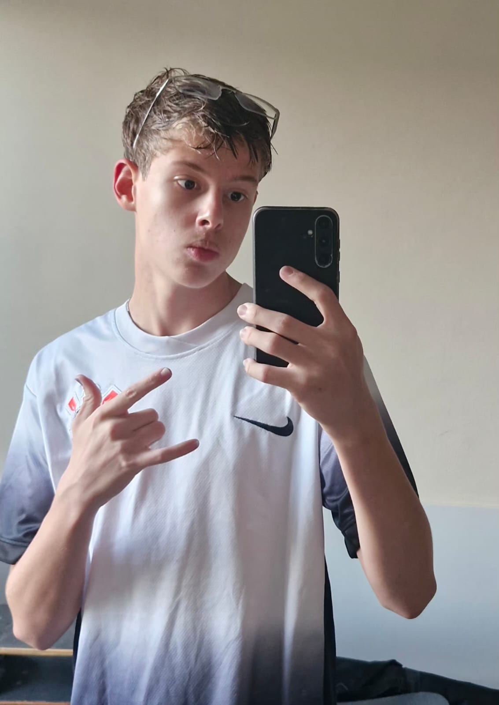
Quem eu sou
Meu nome
Meu nome completo é João Bertozi Neto. Ele é uma homenagem ao meu vô, João Bertozi; por isso, tenho "Neto" no nome.
Minha cidade
Eu cresci na Zona Sul de São Paulo, no Capão Redondo. Recentemente, me mudei para a Vila dos Remédios, na Zona Oeste, para ficar mais perto da escola.
Meu jeito
Sou ambivertido: me solto muito com meus amigos e faço piadas sem parar. Tento ser prestativo e atencioso com as pessoas.
O que eu gosto de fazer
Jogar
Eu adoro jogar porque posso viver mundos completamente diferentes e acho muito gratificante superar obstáculos.
Tênis de mesa
Agora, jogo muito tênis de mesa. Na escola, depois do almoço, jogo por quase 2 horas todos os dias. Comecei a ficar bom nisso e tento melhorar a cada dia.
Cantar
Cantar é libertador para mim porque posso sentir a música, seja no banho, fazendo um trabalho ou num karaokê. Acho isso muito satisfatório.
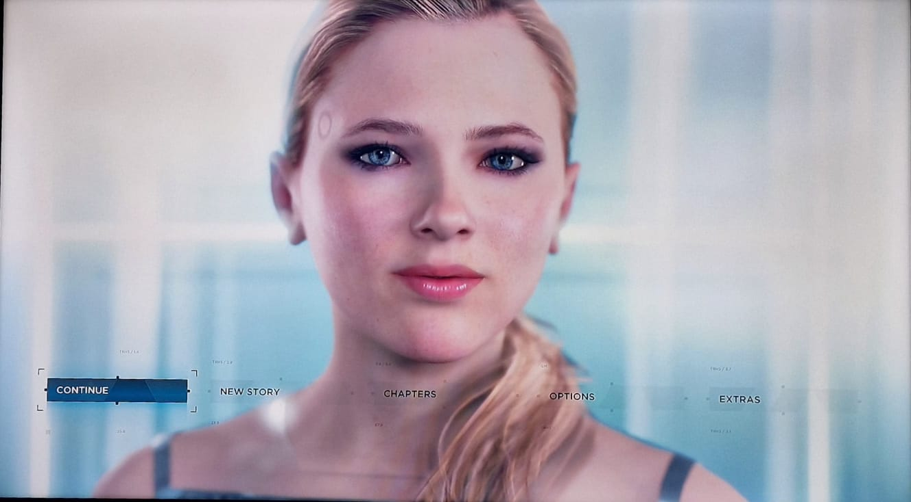
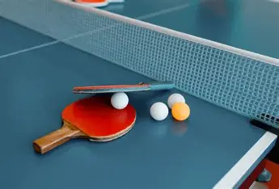
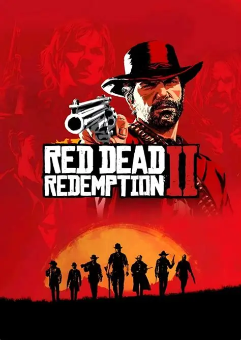
Meus gostos
Músicas
Alguns artistas e bandas que gosto de ouvir:
- Silverchair
- Incubus
- Charlie Brown Jr.
Meu estilo de música favorito é rock.
Minha música favorita é "Miss You Love", do Silverchair.
Jogos
Alguns jogos de que eu gosto:
- Detroit: Become Human
- Mortal Kombat
- Marvel's Spider-Man
Meu jogo favorito é Red Dead Redemption 2 porque o nível de realismo dele é absurdo e você tem muita liberdade dentro do jogo para fazer o que quiser.
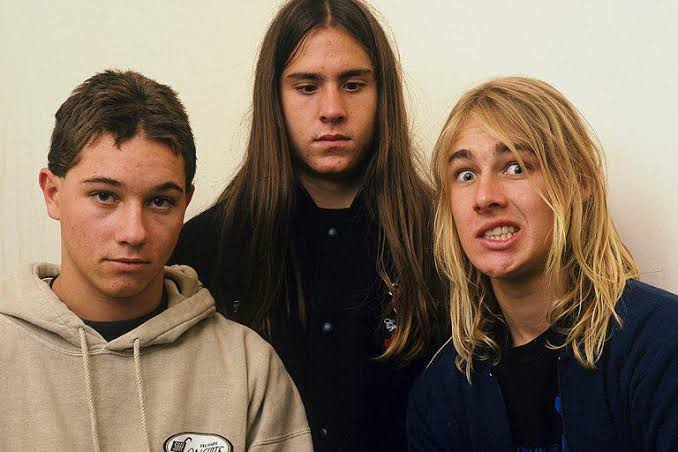
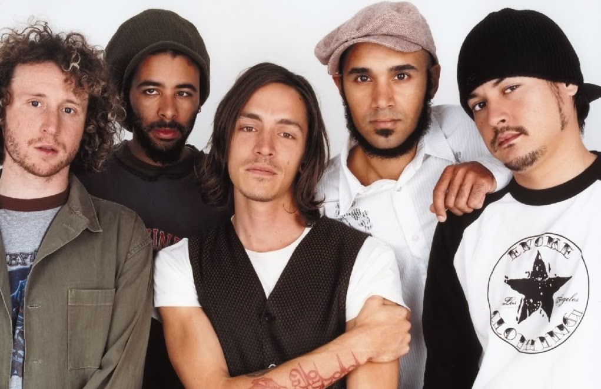
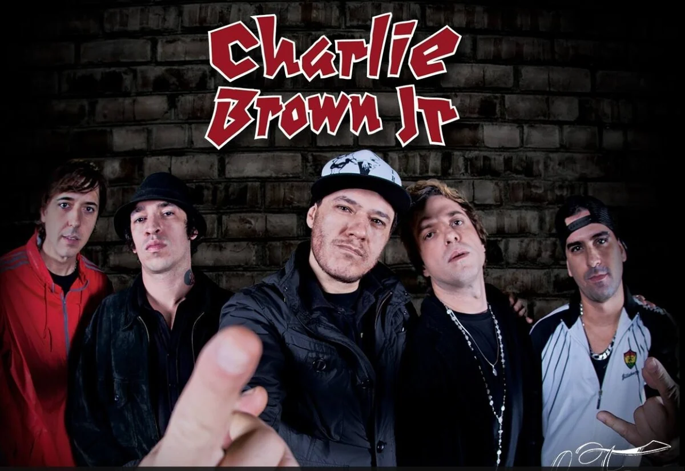
Pessoas importantes
Conheça as pessoas que alegram meus dias e por quem eu daria o meu máximo para fazê-las felizes.
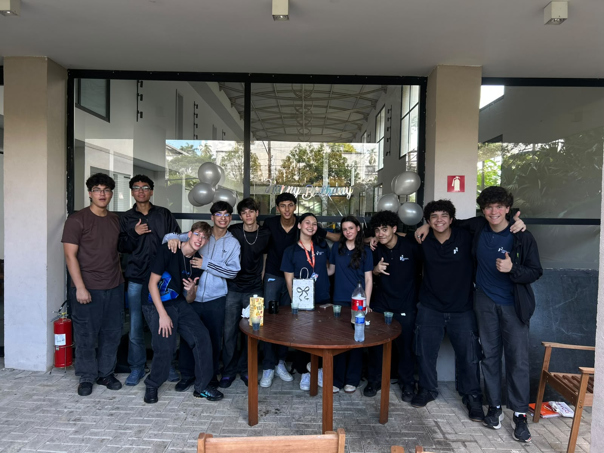
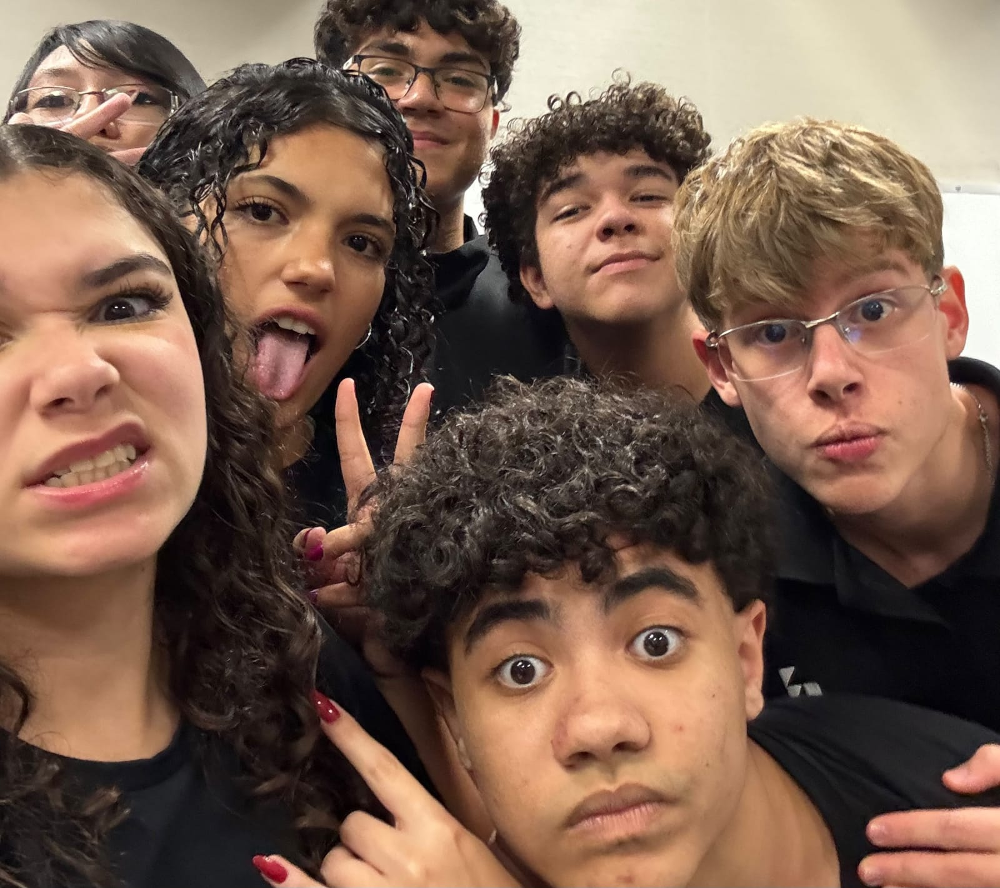
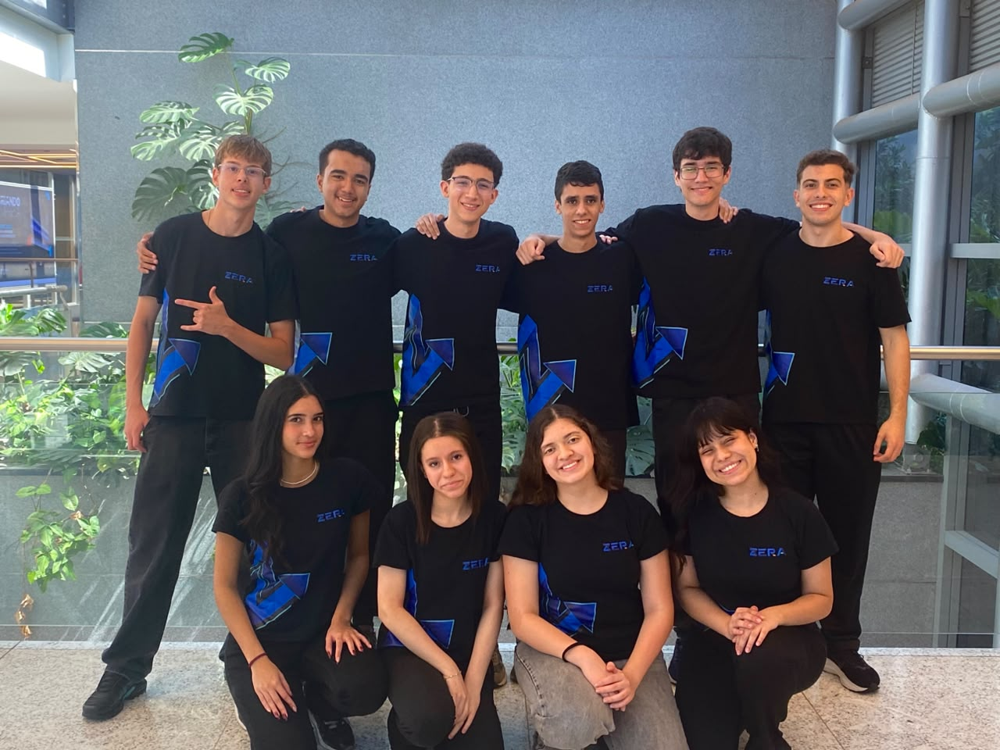
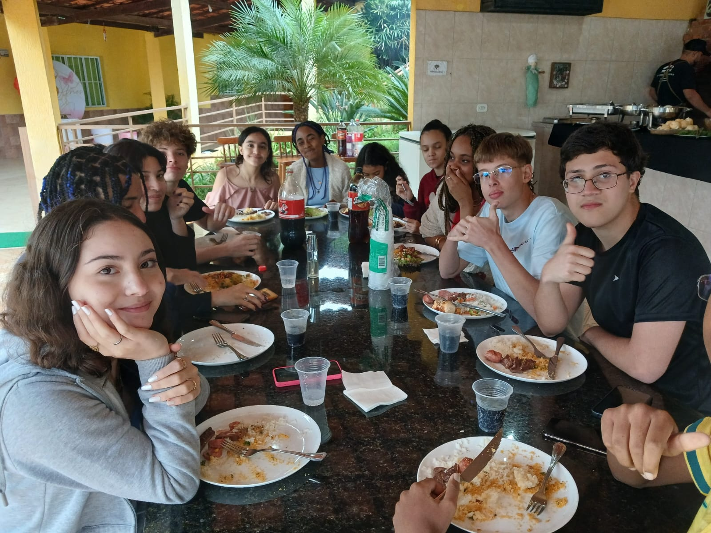
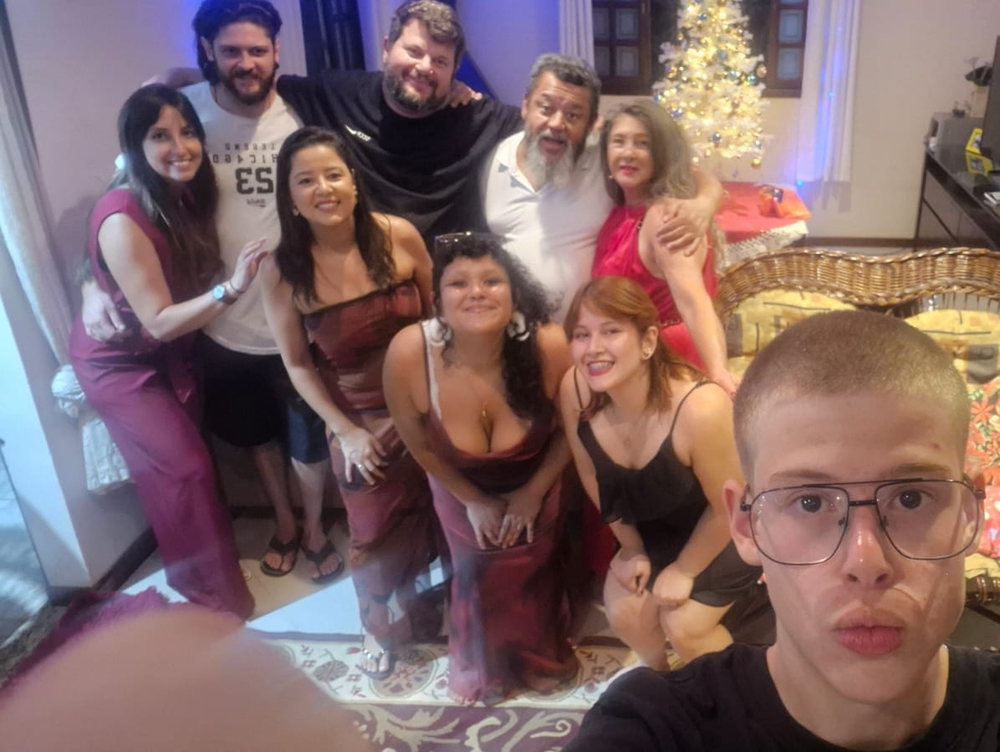
E esta é a família Bertozi.